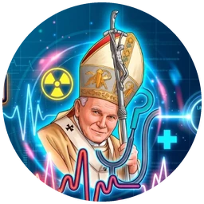
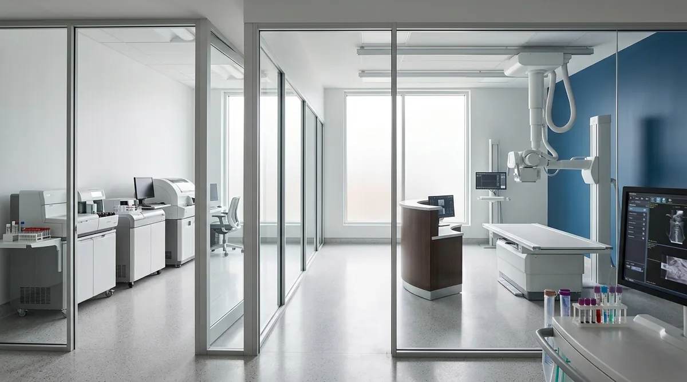

Jornada en Vivo · Ejido
--:--
Lunes a Viernes · 7:00 a.m.–12:00 m. y 2:00–6:00 p.m.


Lunes a Viernes · 7:00 a.m.–12:00 m. y 2:00–6:00 p.m.
Cero almacenamiento de datos médicos en la web o en el teléfono. Todas las citas se coordinan directamente vía WhatsApp Business encriptado.
Toca cualquier área para ver detalles o solicitar tu cita.
Elige especialidad, turno y día. Tu mensaje se arma solo en tu teléfono.
Si el especialista no asiste o no hay vacantes ese día, selecciona otro día de respaldo:

Estudios radiológicos digitales de alta precisión y análisis clínicos confiables en el mismo centro donde consultas con tu especialista.
Si el especialista no asiste a consulta o no quedan vacantes para la fecha inicial, selecciona un nuevo día hábil: